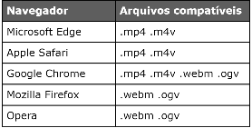

Este vídeo está hospedado no meu própio servidor.
Usamos a tag <video> para inserir o vídeo no site. Dentro desta tag temos os atributos:
Podemos inserir vários source indicando diferentes formatos do mesmo vídeo.
Este vídeo está hospedado no YouTube.
Para inserir um vídeo do YouTube, vamos até o vídeo desejado, clicamos na ferramenta compartilhar e logo após em incorporar, o própio YouTube nos disponibiliza o código, basta copiar e colar dentro do nosso projeto.
Este vídeo está hospedado no Vimeo.
Para inserir um vídeo do Vimeo, vamos até o vídeo desejado, clicamos na ferramenta compartilhar e logo após em incorporar, o própio Vimeo nos disponibiliza o código, basta copiar e colar dentro do nosso projeto.